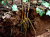

root
phenomenon

Source: Wikipedia
Wikipedia Page (Something wrong with this association? Let us know.)
Wikidata Page (Something wrong with this association? Let us know.)
Occurs in:
- crop_root_nitrogen_accumulation_at-harvest__mass-per-area_density
- crop_residue_pool_root-and-rhizodeposit_biomass_addition__one-year_time_integral_of_mass_flux
- crop_residue_pool_root-and-rhizodeposit-as-carbon_decomposition__one-year_time_integral_of_mass_flux
- above-ground_crop_roots-and-rhizodeposits-as-carbon_decomposition__mass
- plant_root_at-grain-or-forage_harvest-or-death__mass-per-area_density
- roots-and-rhizodeposits_production__time_integral_of_mass-per-area_rate